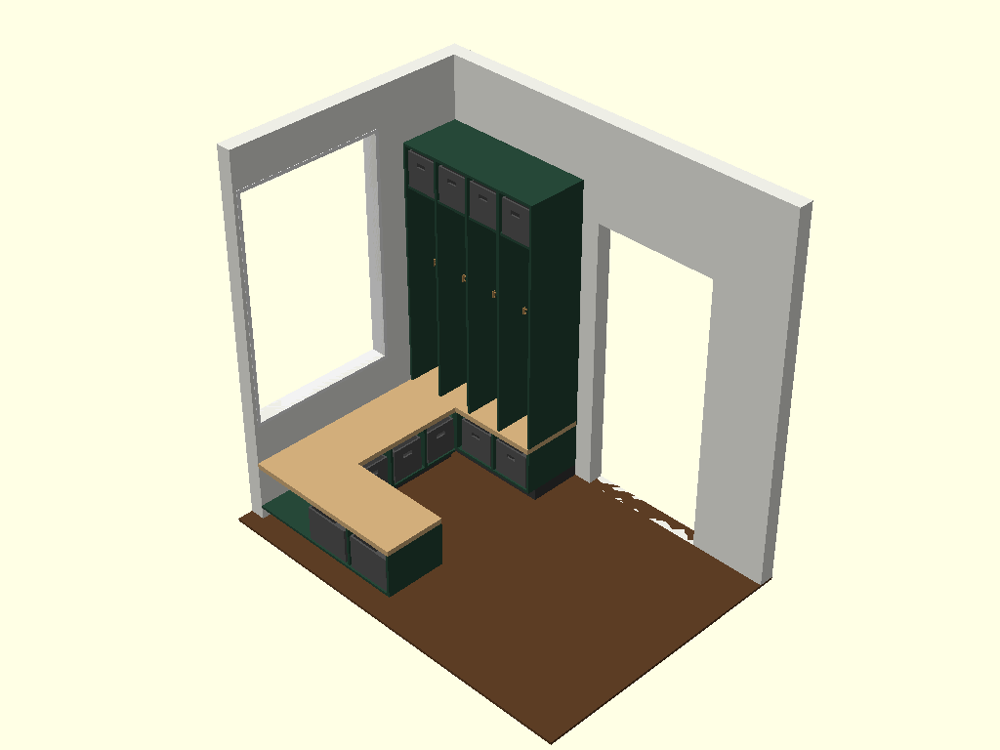
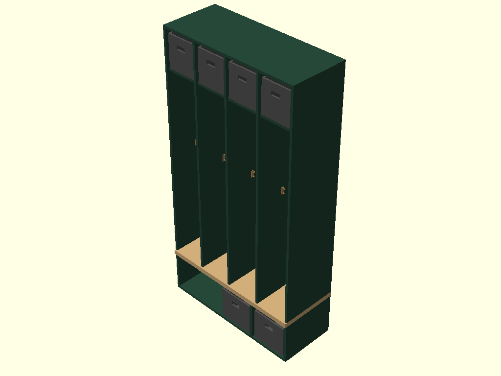

1. Visual Overview (OpenSCAD Renderings)
Here are the 3D visual renderings exported directly from your OpenSCAD model. Use these as a visual reference during assembly:

Figure 1: Angled Overview showing forest green cabinet bases, natural honey butcher block benchtops, dark charcoal baskets, and metallic bronze hooks.

Figure 2: Close-up of the 4 locker bays showing the beadboard backing, child-height hooks (50" off floor), and individual baskets.
2. Spatial Layout & Dimensions (Measured from East Wall Corner)
For ease of measurement during construction, all layout coordinates below are measured Westward from the East Wall corner (0"):
[West Wall] <-- Measuring out from East Wall Corner (0") <-- [East Wall]
+----------------------------------------------------------------------------------+
| 108" 89" 53" 0" |
| Open Walkway | Door Opening (36" W) | Clear Space (53" total) |
| (19" space) | | - North Bench Base (0" to 49") |
| | | - Gap to Trim: 4" |
+----------------------------------------------------------------------------------+
|
| East Wall (71")
| - North Bench: 53" to 71"
| - East Bench: 18" to 53"
| - Locker Bench: 0" to 18"
v
+----------------------------------------------------------------------------------+
| 108" 86" 50" 0" |
| Solid Wall | Open Walkway (36" W) | Clear Space (50" total) |
| (22" space for | | - Locker Base (0" to 44.75") |
| drop zone) | | - Gap to Trim: 5.25" |
+----------------------------------------------------------------------------------+
Critical Specifications:
- Bench Height:
18.0" off the floor (with a 3.5" toe kick, 13" carcass, and 1.5" solid wood top).
- Locker Height:
90.0" total height (ends exactly 6" below the window trim).
- Locker Depth:
18.0" (outer box dimension).
- Locker Bay Width:
10.25" interior width in each of the 4 individual bays.
- Hook Height:
50.0" off the floor (perfect reaching height for kids).
- Backing Panel:
1/4" thick beadboard backing sheet.
3. Material & Shopping List
⚠️ Acclimation Required
Before cutting or building, let the butcher block slabs acclimate inside your house for at least 48 hours to prevent warping or checking once cut.
Butcher Block (For Benchtops)
Buy standard 25" deep, 1.5" thick unfinished butcher block slabs (Birch or Maple):
- 1x 98" (8-foot) Slab: Ripped to 18.5" depth, cut into a
49.0" piece (North bench) and a 44.75" piece (South locker bench).
- 1x 50" (4-foot) Slab: Ripped to 18.0" depth, cut into a
35.0" piece (East bench).
Sheet Goods & Lumber
- 3x Sheets of 3/4" Veneer-Core Birch Plywood: For all carcasses, partitions, bottom shelves, and dividers.
- 1x Sheet of 1/4" Beadboard Plywood Panel: For the locker backing panel.
- 6x 8-foot 2x4 Framing Lumber: For building the toe kick platform bases.
Trim, Finishing & Hardware
- Solid Birch Trim (1/4" x 3/4" strips): For gluing and nail-fastening onto exposed plywood front edges.
- 8x Double Coat Hooks: Warm metallic bronze finish.
- Charcoal Grey Felt/Canvas Baskets:
- 4x Top Baskets:
9.25" W x 17" D x 10" H (Locker top cubbies)
- 4x Seat Baskets:
9.25" W x 17" D x 8" H (Locker bench seat)
- 2x Lower Locker Baskets:
11.0" W x 17" D x 10" H (Locker base)
- 2x North Bench Baskets:
13.0" W x 17" D x 10" H (North bench)
- 3x East Bench Baskets:
9.5" W x 17" D x 10" H (East bench)
4. Step-by-Step Build Plan
Phase 1: Shop Preparation (Off-Site)
- Cut Plywood: Rip all carcass side panels to exactly
18.0" wide. Cut all vertical dividers and bottom shelves to length.
- Edge Banding: Glue and nail the solid wood trim onto all exposed front edges of the plywood. Sand flush.
- Assemble Lower Cabinets: Assemble the South Locker base carcass and the North Bench base carcass. Do not cut or build the East Bench carcass yet.
- Finishing: Sand all carcasses to 220-grit. Prime with shellac-based primer (Zinsser BIN) and paint them dark forest green. Stain and seal the butcher block benchtops with 4 coats of polyurethane.
Phase 2: Platform Installation (In the Mudroom)
- Build 2x4 Frames: Assemble the three toe kick frames with screws.
- Level & Shim: Lay the frames in position and shim them from the floor until the top edges are 100% level.
- Anchor: Screw the leveled 2x4 frames into the wall studs and subfloor.
Phase 3: Base Carcass Installation
- Install North and Locker Bases: Place the pre-built Locker base and North Bench base onto the platforms, align them, and screw them into the wall studs.
- Measure & Cut East Bench: Measure the exact real-world distance between the installed North Bench and Locker base boxes. Cut the East Bench shelf and dividers to this size in the shop, assemble, and slide it in.
- Install Corner Post: Install the 2x2 or L-shaped support pillar in the open corner to support the joint.
Phase 4: Scribe & Mount Benchtops
- Scribe to Walls: Place the finished butcher block slabs on the bases. Scribe the back edges to match the wall curvature.
- Cut Seams: Cut the pieces to final length, trimming the 90° butt joint where the East and South benches meet the North bench.
- Mount: Drive pocket screws from the underside of the cabinet carcasses up into the butcher block.
Phase 5: Assemble and Install Uppers
- Build Locker Frame: Assemble the locker dividers and upper cubby shelves to the beadboard back panel in the shop.
- Mount Upper Box: Lift the upper locker frame onto the benchtop. Secure it by screwing through the beadboard back into the wall studs, and running screws up through the underside of the benchtop.
- Hooks & Baskets: Screw in the bronze hooks and slide all the charcoal baskets into place.
5. Pro Carpentry Tips & Tricks
💡 The Back-Bevel Scribe Trick
When jigsawing your scribed lines on the 1.5" butcher block, tilt the jigsaw blade 5° to 10° inward. This removes the wood bulk underneath, leaving a thin edge at the top. This makes it incredibly easy to quickly sand down the wood to meet the wall perfectly.
⚠️ Prevent Paint Sticking (Blocking)
Urethane acrylic cabinet paint takes 7 to 14 days to fully cure to maximum hardness. Avoid sliding the heavy charcoal baskets onto the painted shelves for at least a week, or apply small felt pads to the underside of the baskets to prevent them from sticking and tearing off the green paint.